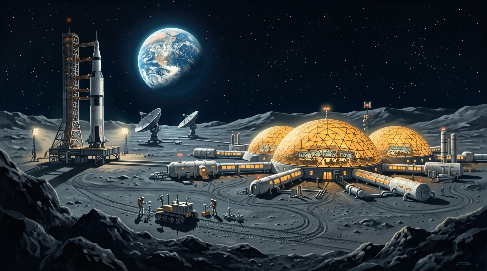

inner-animal
Mission Control · Architecture Map
LAST TELEMETRY
2026-07-20T17:13:39-04:00
Station Filters
Confidence
[×]
Legend
signal / pulse (data)
orbit (session / runtime)
launch path (deploy / money)
radar (routing)
confirmed
inferred
review
Needs Review